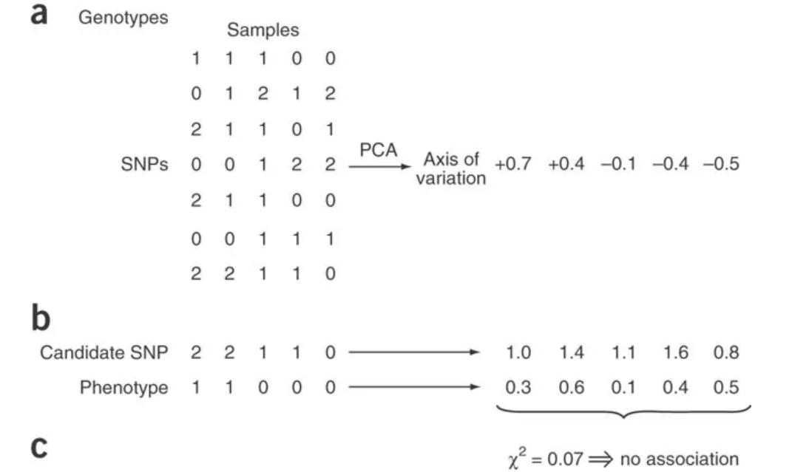
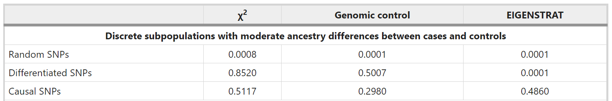
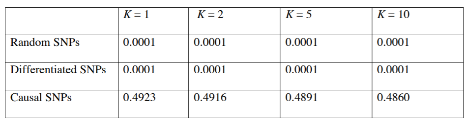
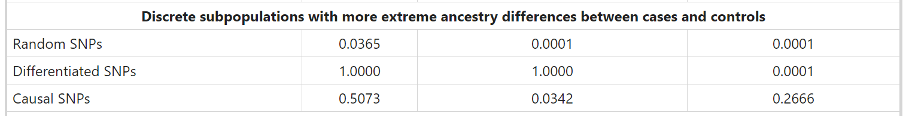
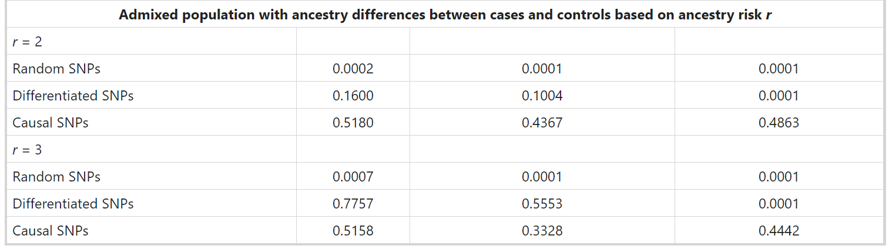
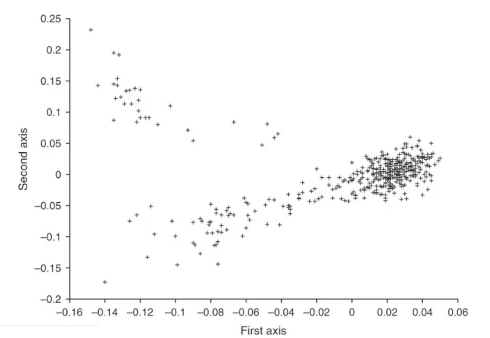
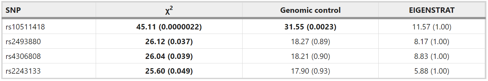

种群分层Population stratification（由于系统的血统差异systematic ancestry differences而导致cases与controls之间的等位基因频率差异allele frequency differences）可能导致疾病研究中的虚假关联。
此文介绍了一种方法，可以在全基因组范围内显式检测和校正群体分层。使用主成分分析（PCA）来显式地建模cases与controls之间的祖先差异。 所得的校正特定于候选标记candidate marker在整个祖先群体中的频率变化，从而最大程度地减少了虚假关联minimizing spurious associations，同时使检测真正关联的能力最大化maximizing power to detect true associations。
New method EIGENSTRAT
- genomic control & structured association
分层效应与样本数量成正比，因此分层将成为未来大规模关联研究中一个日益严重的问题。处理分层的两种主要方法是基因组控制genomic control和结构化关联structured association。
1.基因组控制通过调整每个标记处的关联统计数据以统一的总体膨胀因子inflation factor来校正分层。
通过基因组控制施加的统一调节可能在祖先群体中具有异常强的分化的标志物上是不够的，而在没有这种分化的标志物上可能是多余的，从而导致能力丧失。
2.结构化关联使用诸如STRUCTURE之类的程序将样本分配给离散的亚群，然后在每个集群中汇总关联的证据。
在大型数据集上的计算成本很高，个体对集群的分配对集群的数量高度敏感。
- EIGENSTRAT
eigenvector, stratification
Step1: 主成分分析应用于基因型数据，以推断遗传变异的连续轴continuous axes 。变化轴将数据缩减为少量维，从而描述了尽可能多的变化，它们被定义为样本协方差矩阵的最大特征向量。
在样本之间存在先祖差异的数据集中，变化轴通常具有地理解释：例如，描述欧洲西北偏东南部的轴的值将逐渐从西北欧的正值到中部的接近零欧洲，东南欧为负数。
Step2: 计算线性回归的残差，通过沿每个轴的祖先数量连续调整基因型和表型。removing all correlations to ancestry.（这一步是怎么做的我还不太清楚，因为之前接触过的主成分分析是用来降维的，但这里是把一个主成分给抽掉的样子，就是把主成分的那个方向对基因型作预测，然后用回归系数把那部分拉掉）
Step3: 使用祖先调整ancestry-adjusted的基因型和表型来计算关联统计量。

（a）将主成分分析应用于基因型数据，以推断遗传变异的连续轴； 此处显示了一个变化轴。
（b）候选SNP的基因型和表型通过沿每个轴的祖先数量进行连续调整，从而消除了与祖先的所有相关性。
（c）血统调整后，候选SNP的基因型与表型之间的关联统计显示无显着关联。
Results: Simulated disease studies & European America data sets
Simulated disease studies
模拟疾病研究比较结构化关联方法和基因组控制方法。
moderate ancestry differences
Discrete subpopulations with moderate ancestry differences between cases and controls.
500个病例和500个对照的100,000个随机SNP生成了数据，其中60％的病例和40％的对照是从种群1采样的，其余病例和对照是从种群2采样的。
使用主成分分析来推断100,000个随机SNP的十个独立数据集中的每一个的连续变化的正交轴）。由于数据仅包含总体结构的一个附加维度，因此希望仅关注变化的top axis。但是，为了测试EIGENSTRAT对使用的变化轴数的敏感性，实际上推断出变化的前十个轴。检查了变异的top axis是否准确地跟踪了种群1与种群2的隶属关系，发现沿top axis的坐标与样本中的种群隶属关系相关，为99.9％；其余的轴是采样的假象。
文章模拟了三种候选SNP，以比较不同分层校正方法的有效性。
第一类（与疾病无关联的随机SNP）
第二类（分化的SNP，无关联）
该类别是由以前对乳糖酶（LCT）基因中SNP的研究所激发的，这表明由于分层，与欧美裔美国人的身高表型存在虚假联系。
第三类（因果单核苷酸多态性 causal SNPs）
使用FST = 0.01的Balding-Nichols模型和因果等位基因相对风险为1.5的乘性疾病风险模型。
对于100,000个随机SNP的十个数据集的每一个，文章在三个类别中的每个类别中模拟了1,000,000个候选SNP，并使用以下三种方法计算了关联统计量：
（i）无分层校正的Armitage trend $\chi^2$；
（ii）Genetic control使用随机SNP来推断inflation factor；
（iii）EIGENSTRAT使用随机SNP来推断十个变化轴。
P值<0.0001统计显著
模拟结果表明，相对于基因组控制，EIGENSTRAT通过对病例和对照的祖先进行显式建模，可以达到同等或更低的假阳性关联率，并能够以更高的灵敏度检测出真实的关联。
1.对于随机候选SNP，对于P <0.0001的临界值，两种方法都将误报率降低到期望值。
2.对于高度分化的候选SNP，基因组控制可能会产生假阳性，而EIGENSTRAT仍能完美地校正分层。
3.因果疾病SNP，EIGENSTRAT具有更高的功效（几乎等同于未经分层的统计数据）：49％比基因组对照的30％.
再次证实，基因组控制的统一调节在显示祖先群体间异常强的分化的标记物上是不足的，而在没有这种分化的标记物上是多余的。

EIGENSTRAT模拟的一个可能问题沿变化的前十个轴调整了血统。由于此数据集仅包含一个额外的人口结构维度，因此希望仅关注变化的top axis。
在每个SNP类别中，对于K = 1、2、5或10，结果实际上是相同的。这意味着，只要有足够的轴数，EIGENSTRAT的结果对使用的变化轴数并不敏感。因为轴是正交的。更为严格的方法是将K设置为具有统计意义的有效变化轴数。

more extreme ancestry differences
Discrete subpopulations with more extreme ancestry differences between cases and controls.
从种群1抽样了50％的cases和0％的control，其余cases和control抽样自种群2。也就是说种群1没有对照。
1.对于随机候选SNP，分层比以前更严重，但仍可以通过基因组控制和EIGENSTRAT进行完美校正。
2.对于高度分化的SNP，现在可以保证分层产生假阳性关联，而基因组控制无法纠正这种错误关联，而EIGENSTRAT可以再次实现完美的分层校正。
3.对于因果SNP，基因组控制几乎失去所有能力，而EIGENSTRAT则损失部分能力。

再一次证实基因组控制的上述缺陷：异常强的分化的标记上是不够的，而在没有这种分化的标记上是多余的。
进一步检查了EIGENSTRAT所获得的功效，并确定其与仅使用人口250例病例和500个对照来计算未经校正的χ2统计量所获得的功效相同。直观地，EIGENSTRAT的血统调整有效地从种群中移除了250例病例。但是请注意！这并没有消除在设计疾病研究时仔细匹配病例和对照的必要性：在当前示例中，一组更紧密匹配的500例病例和500个对照将具有更好的检测真实关联的能力。
Admixed population
Admixed population with ancestry differences between cases and controls based on ancestry risk $r$
抽样个体，种群1中的祖先比例为$a$且种群2中的祖先比例为$1− a$，$a\sim U[0,1]$ ；病例/对照状态疾病风险比$r^a$，based on ancestry risk $r$.
r = 2和r = 3的结果记录在表。 EIGENSTRAT再次比基因组控制更有效地校正了高度分化的SNP的分层，并在因果SNP上获得了更高的功效。

但是，即使EIGENSTRAT也会在因果SNP上产生轻微能力损失：因为其祖先推论非常精确，top axis与$r$的任何一个值的真实祖先都相关为99.8％，作者猜测测这种能力缺陷可能是由于不完美的cases和controls的匹配，类似于前一种情况。
variables of interest
- 样本数（N）
尝试更改样本N的数量，N分别为100、200、500和1000时进行模拟，each yielded a top axis of variation that is 99.9% correlated to population membership across samples.
有效的分层校正对样本数量不敏感。
- 随机SNP数量（M）
将注意力集中在高度分化的候选SNP上，它们极有可能产生假阳性关联。发现当M <5000时，EIGENSTRAT很难推断出完全准确的变化轴，从而导致分层校正不完全。另一方面，即使变异轴的推断略有误差，随机候选SNP的分层校正对于M≥200也有效。
- FST值<0.01
高度分化的SNP进行完全分层校正：FST = 0.005，20,000 SNP； FST=0.002，50,000 SNP；FST=0.001，100,000 SNP. 因此，即使在高度分化的SNP的情况下，对具有数十万个SNP的美籍美国人进行基因组扫描也将能够检测并校正在紧密相关的欧洲人群中的分层。
由于计算量大，无法将结构化关联方法structured association method包括在上述比较中。因此，作者通过复制数据量小得多的模拟比较了EIGENSTRAT，基因组控制和结构化关联。这三种方法在校正随机候选SNP的分层方面均取得了相似的成功，而EIGENSTRAT在检测因果SNP的真实关联时，具有优于基因组控制或结构化关联的强大能力。
European America data sets
作为正在进行的疾病研究的一部分，作者将该方法应用于在Affymetrix平台上进行基因分型的488个美国人的数据集，该平台包含116,204个SNP。主成分分析表明存在十个具有统计意义的轴（每个轴P <0.01）。图中显示了前两个轴（每个轴P <10^-12）。有趣的是，观察到了连续和离散的遗传效应。 基于其与乳糖酶持久性的相关性，假设第一个轴反映了西北欧洲和东南欧洲之间的遗传变异，第二个轴将两个东南亚亚群分开。

作者对乳糖酶持久性表型进行了关联研究。之所以选择这种表型，是因为它与欧洲内部血统相关联，并且可以从数据中推断出来，因为它与LCT基因的基因型100％相关。
尽管与该表型完美相关的SNP不是基因分型的116,204个SNP中的一个，但附近的SNP rs3769005已被分型，并且与HapMap31的欧洲样本中的完美相关SNP有90％的相关性。因此，可以从该SNP处的基因型以合理的准确性推断出乳糖酶持久性表型。如预期的那样，第2号染色体上的大量SNP显示出高度显著的关联，反映了发生在LCT基因上的强选择性扫描strong selective sweep。因此，将随后的分析仅限于2号染色体外的SNP。4个SNP显示出显著的相关性，这可能是由于分层。

首先尝试使用genomic control校正分层。将未经校正的$\chi^2$统计量除以全基因组膨胀因子为λ= 1.43，最上面的SNP仍然显著关联。然后运行EIGENSTRAT，均未报告显著关联。
值得注意的是，EIGENSTRAT推断的变异的上轴与四个最初相关的SNP和乳糖酶持久性表型都密切相关，大概是因为西北欧洲和东南欧之间的乳糖酶持久性不同。 因此，沿该轴进行校正可解决虚假关联。
在上面的分析中，EIGENSTRAT用于推断变异轴的SNP集包括感兴趣的候选SNP。这就提出了一个问题，即是否可以通过包含这些SNP来使变异轴偏倚。通过排除候选SNP研究，结果基本上没有变化。表明在推断大型数据集的变化轴时，该方法对于包含或排除候选SNP具有鲁棒性。
测试需要多少个随机SNP才能有效地进行分层校正。所需的SNP数量大于在FST = 0.01的模拟中确定的数量。猜测由于欧美人是混合人群，因此有效FST可能小于0.01。
Conclusion & Discussion
EIGENSTRAT通过主成分分析，沿连续的变化轴显式建模cases和control之间的祖先差异。在模拟和真实数据集上的表现优于主流方法，并且可以轻松地用于具有成千上万个标记的疾病研究。
尽管EIGENSTRAT是纠正分层的一种强大而强大的方法，但它不是万能药，研究人员应遵循精心进行实验设计的原则，在最大程度上匹配cases和control的祖先和实验室治疗。如果违反这些原则导致cases和control之间存在strong bias，则EIGENSTRAT可能会发现这种bias，但势必能力下降。
虽然此文研究重点是祖先效应，但最近的一项研究表明，样本之间实验室处理的差异是一个普遍存在的问题，通常会超过人口分层的影响。确实，在此处描述的欧美数据集中，变化的前两个轴描述了祖先效应，但是在第三个轴中检测到了样品之间实验室处理差异的细微证据。 EIGENSTRAT明确解决这种细微影响的能力令人鼓舞。
reference: Principal components analysis corrects for stratification in genome-wide association studies https://www.nature.com/articles/ng1847